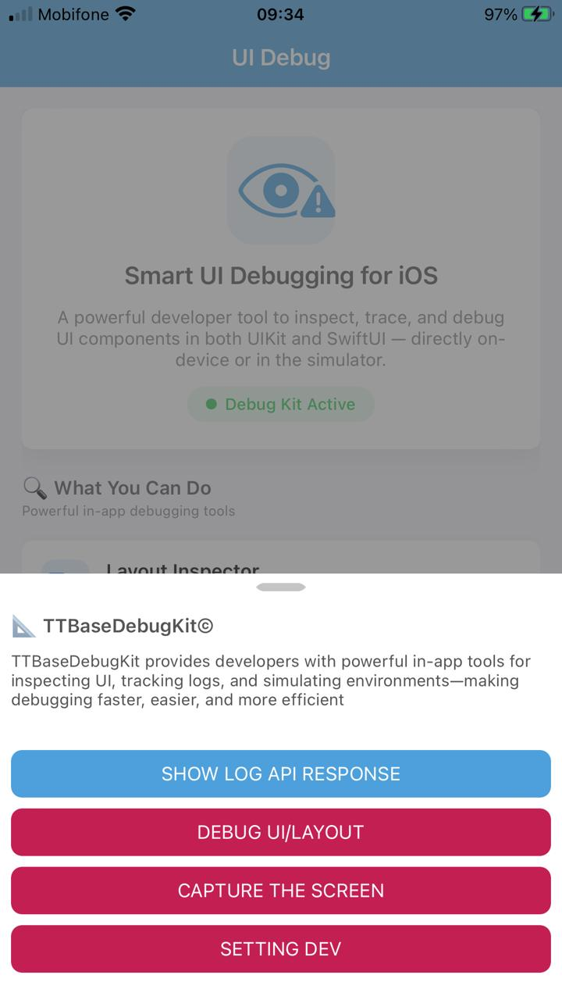

The Fastest Way to Learn
Stop reading docs — run the example first. Experience components in action, then study the code. That's how pros learn frameworks.
📱 Example App Screenshots
TTBaseUIKitExample — 5 tabs showcasing UIKit, SwiftUI, Debug tools, and real-world API demos



Why "Run First"?
Experience Before Theory
Seeing components in action creates mental models that make code infinitely easier to understand.
Pattern Recognition
Running the app reveals architecture patterns — Coordinator, ViewCodable, Config — before you read a single line.
10x Faster Learning
Developers who run examples first learn frameworks 10x faster than those who start with documentation.
⚡ Quick Start — 60 Seconds
From zero to running TTBaseUIKitExample in your Xcode simulator
git clone https://github.com/tqtuan1201/TTBaseUIKit.git
open TTBaseUIKit.xcodeproj
🔍 What's Inside the Example
5 tabs covering every aspect of TTBaseUIKit — from basic components to real-world API demos
🧱 UIKit Demos Breakdown
11 dedicated UIKit demo categories covering all base views and patterns
🏛️ Code Architecture
Understand the patterns used in TTBaseUIKitExample
1. AppDelegate — Config
// Configure Design System
let view = ViewConfig()
view.viewBgNavColor = UIColor.getColorFromHex(
netHex: 0x4DA0DC)
view.buttonBgDef = UIColor.getColorFromHex(
netHex: 0x4DA0DC)
let fontConfig = FontConfig()
fontConfig.HEADER_H = 18
fontConfig.TITLE_H = 14
let sizeConfig = SizeConfig()
sizeConfig.H_BUTTON = 50.0
sizeConfig.CORNER_RADIUS = 8.0
TTBaseUIKitConfig.withDefaultConfig(
withFontConfig: fontConfig,
frameSize: sizeConfig,
view: view
)?.start(withViewLog: true)2. AppCoordinator — Navigation
class AppCoordinator: Coordinator {
func start() {
let tabBar = UITabBarController()
// Menu Tab (UIKit)
let menuNav = UINavigationController()
let menuCoord = MenuCoordinator(
navigationController: menuNav)
menuCoord.start()
// Demos Tab (SwiftUI)
let demosVC = DemoFeaturesView()
.embeddedInHostingController(
isHiddenTabbar: false)
tabBar.viewControllers = [
menuNav, demosVC, contactNav]
window.rootViewController = tabBar
}
}📖 After Running — Deep Dive
Once you've experienced the app, explore these resources to understand every component
Ready to Start?
Clone TTBaseUIKitExample, run it, explore every tab — then come back here to understand the code. That's the best practice.